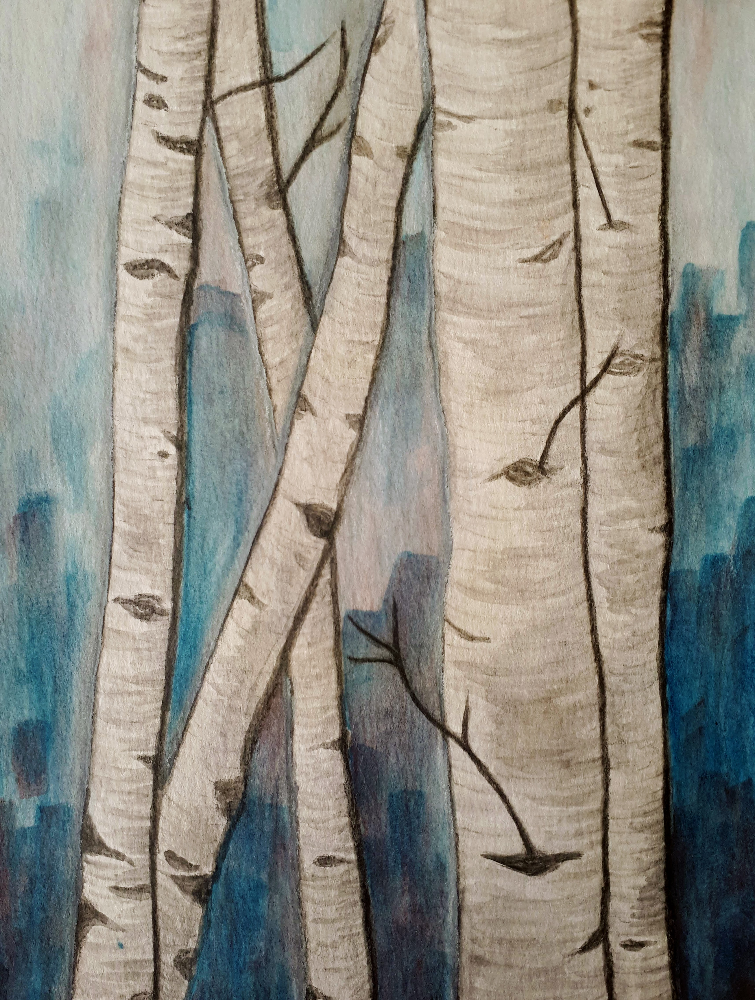
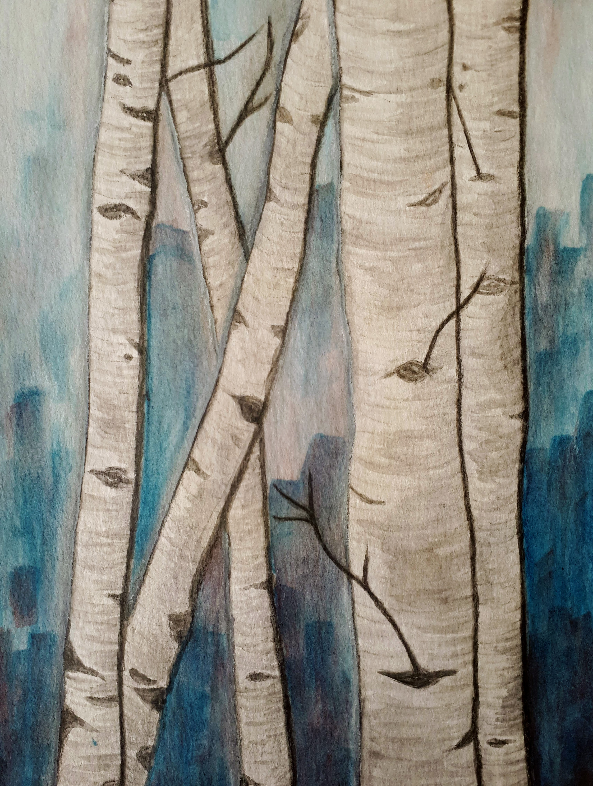
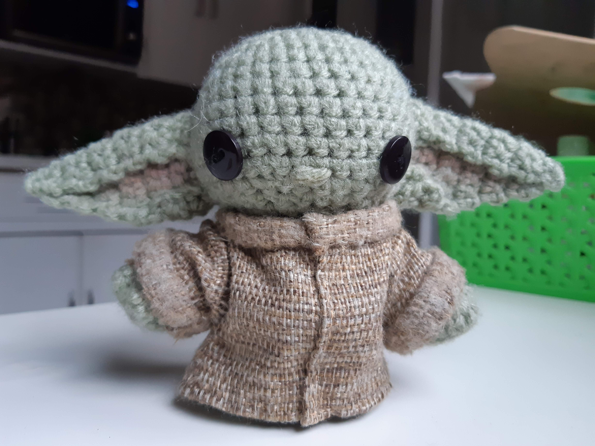
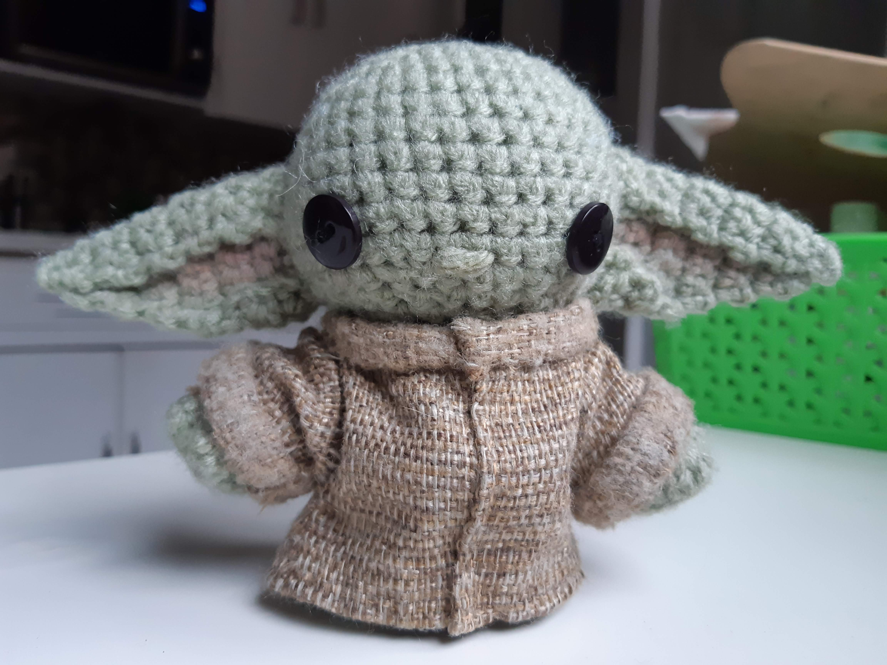

Veronica Reingold
"Nonika"
CV TranscriptSkills and Assets


- Honours Bachelor of Computer Science graduate with a specialization in Game Development.
- Proficient with multiple programming languages including C#, Java, C, Python, and SQL with a great understanding of and ability to implement data structures and algorithms.
- Skilled at using Unity for game development projects including implementing intelligent agents, utilizing state machines, steering behaviors, A* pathfinding, and random generation.
- Experience with front-end web development using HTML, JavaScript, and CSS.
- Experience working with the Object-Oriented Programming (OOP) design paradigm.
- Familiarity with the software development life cycle (SDLC) and development processes such as the waterfall and Agile methods, including designing and implementing unit testing.
- Experience utilizing GitHub and GitLab for version control in team environments, properly handling branching and merging with team members.
- Proficient with all Microsoft Office tools including Excel.
- Experience with digital image design with Adobe Photoshop and video editing with Vegas Pro.
- Fluent in English, French, and Russian.
Projects
Little Alien Jumps Home
Demo
- 2D Unity Game
2D Dungeon Crawler
- Designed a thematic dungeon crawler game, including features such as enemy recruitment.
- Designed the architecture of the codebase, following best inheritance and polymorphism practices.
- Researched procedural generation techniques, implementing a random walk algorithm on a 2D array.
- Designed algorithms to detect room access and spawns for a procedurally generated level.
- Worked as a team utilizing GitHub for version control.
H&M Virtual Closet
- Conceptualized a product to improve a customer's shopping experience at H&M.
- Programmed a virtual closet with a drag-and-drop user interface allowing customers to put together outfits.
- Created a demo video to pitch and sell the virtual closet to ADA and sponsor judges.
- Won Jam3's sponsor award for best fulfilling their prompt, and ADA's most creative project award.
- Our prompt for the competition was: "Build a product that helps a company leverage tech to improve their customer/business experience. To build this product, you must choose an existing company, and build a product that enables this company to use tech to revamp their business processes or customer interactions. Your project will be judged on criteria such as implementation, design, usability, and bonus points are given if you have a fantastic and well thought out UI/UX design."
Artificial Intelligence for Games Projects
- Implemented sensors and actuators, finite state machines, steering behaviors, corner-graph node generation, and A* pathfinding.
- Innovated the finite state machine portions of the class by setting up visual graphs for defining state machines and tracking their transitions.
- Only student in the class to achieve a grade of 100%.
Bazar Ukranian & International Food Website
- Leveraged Bootstrap to develop a lightweight, single-page website.
- Configured the domain, email, and hosting utilizing GitHub Pages.
Experience
Software Developer
- Developed software applications, with a primary focus on web design.
- Offered advice on application design.
- Gave advice on Unity and C# development.
- Graphic design in a wide array of styles.
Teaching Assistant
January 2023 to April 2024

- Teaching assistant for "COMP-3770 Game Design, Development and Tools", "COMP-3710 Artificial Intelligence Concepts", and "COMP-2140 Computer Languages, Grammars, and Translators".
- Instructed students on game development with Unity.
- Taught students about fundamental artificial intelligence techniques.
- Tutored students on data structures, algorithms, and logic.
- Conducted labs, graded assignments and tests, and proctored exams.
Teaching Assistant
January 2015 to June 2017
- Tutored students on subjects including math and French.
- Assisted in running the school library, including operating the management system.
- Created and taught art projects to students.
Event Organizer
December 2014 to August 2015
- Organized and ran activities.
- Worked with people with physical and mental disabilities.
Education
University of Windsor
September 2019 to June 2024
Honours Bachelor of Computer Science
Game Development Specialization
Graduated with Great Distinction June 2024
94.8% Average
- 91.6% Average in Game Development Specialization Courses
- 93% Average in Artificial Intelligence Specialization Courses
- 97% Average in Multi-Media Specialization Courses
- Gold LEAD Medallion Scholar
Minor in Mathematics
88.33% Average
Minor in Communication, Media and Film
86.17% Average
Activities
Artist
 

 


- Artist with experience across multiple mediums and disciplines.
- Experience creating digital designs including Adobe Photoshop.
- Experience creating short animations using Adobe Animate.
- Skilled at painting in acrylic, watercolour, and oil.
- Skilled at drawing in graphite, and coloured pencil.
- Experience sculpting clay, paper, and other materials.
- Skilled at crochet, embroidery, sewing, needle felting, and knitting.
- Deep comprehension of the mathematics behind crochet and experienced in creating custom patterns.
Powerlifting
- Follow a strength training program focusing on the squat, bench press, and deadlift.
- Dedicated focus on health and nutrition by incorporating healthy eating habits that supports my overall health and wellness.
- Have helped friends begin their journey in the gym.
Awards
| Award | Year |
|---|---|
| Gold LEAD Medallion Scholar | 2024 |
| Alumni Association Academic Achievement Award OPUS | 2024 |
| University of Windsor In-Course Scholarships | 2024 |
| Danial Family Scholarship for Women in Computer Science | 2023 |
| AlphaKOR-IT Excellence Award | 2020 |
| University of Windsor Entrance Scholarship | 2019 |
wits+ ADA Mentorship Program
| Award | Year |
|---|---|
| ADA's Most Creative Project Award | 2022 |
| Jam3's Sponsor Award | 2022 |
Courses
Computer Science
COMP-4990 Project Management: Techniques and Tools
This course requires students to complete an application development project in some area of Computer Science under the supervision of a faculty member. The course will typically involve the development of some software or the design and/or implementation of some algorithm. Students will be required to submit project reports and give presentations on the technical components of the project.
COMP-4770 Artificial Intelligence for Games
This course provides students with an opportunity to explore theoretical and practical aspects of Artificial Intelligence for computer games. Topics may include agents, sensory systems, steering behaviours, pathfinding, decision making, planning, goal-oriented behaviour, multi-agents (groups, crowds) and learning.
COMP-4540 Design and Analysis of Computer Algorithms
The intent of this course is to introduce the fundamental techniques in the design and analysis of computer algorithms. Topics include: asymptotic bounds, advanced data structures, searching, sorting, order statistics, oracle arguments, divide-and-conquer, greedy algorithms, dynamic programming, graph algorithms, NP completeness, and approximation algorithms.
COMP-4400 Principles of Programming Languages
Basic concepts of programming languages. Comparative study of the major programming paradigms, including imperative, object-oriented, functional, logic, and concurrent programming. Principles of programming language design and evaluation. Syntax, semantics and implementation techniques of programming languages.
COMP-3770 Game Design, Development and Tools
This course introduces professional game design and development tools. Students will become proficient in the use of a commercial grade game engine (e.g., Unity3D) and associated scripting/programming languages (e.g., C#) through programming intensive hands-on assignments. Topics may include game design and development concepts such as game objects and game components, game physics and collision handling, basic artificial intelligence, 2D and 3D graphics, textures and shaders, sprite animation, 3D animation, and audio.
COMP-3710 Artificial Intelligence Concepts
This course covers fundamental concepts in Artificial Intelligence. Topics include informed and uninformed search, problem solving using propositional and first-order logics, knowledge representation and reasoning, plausible and uncertain reasoning, machine learning, ethical implications. An overview of some applied Artificial Intelligence such as natural language processing, planning and agent systems will be included.
COMP-3670 Computer Networks
This course is an introduction to computer networks and their protocols. Topics include: network architectures, transport, routing, and data link protocols, addressing, local area networks, flow and congestion control, and network security. Examples will be drawn primarily from the Internet (e.g. TCP, UDP, IP) protocol suite.
COMP-3540 Theory of Computation
Finite Automata, regular expressions and languages; properties of regular languages; context-free grammars and languages; pushdown automata; properties of context-free languages. Introduction to Turing machines; recursive functions; undecidability.
COMP-3500 Introduction to Multimedia Systems
This course provides the student with basic concepts and techniques used in multimedia systems. Topics include: components of multimedia systems (text, audio, and video), media formats and standards, data compression techniques, hypermedia techniques, and authoring tools.
COMP-3300 Operating Systems Fundamentals
Operating system services, introduction to primary components of multi-programming operating systems, CPU scheduling, concurrent processes, process synchronization and interprocess communication, deadlocks, memory management, file systems, virtual memory, disk scheduling.
COMP-3220 Object-Oriented Software Analysis and Design
This course builds on the knowledge of object-oriented programming, data structures, systems programming. Students are introduced to object-oriented software analysis and design concepts (such as cohesion and coupling), and design practices currently used in industry, (such as design patterns and refactoring). These concepts and practices will be discussed through case studies and programming exercises.
COMP-3150 Database Management Systems
This course will acquaint students with the Basic concepts of Database Systems. The topics covered will include 3-level architecture, introduction to file structures: B-trees, B+ Trees and Hashed files, relational model, relational algebra and calculus, SQL, and database design with Normalization Theory.
COMP-3110 Introduction to Software Engineering
This course introduces the fundamental concepts, common principles, and general techniques of software engineering. It discusses the main issues involved in the development life-cycle of nontrivial software systems, including process models, feasibility studies, requirements elicitation and definition, rapid prototyping, design methodologies, verification and validation, and software evolution. Students taking this course are required to work on projects, which are designed to go through the major phases of large-scale software system development.
COMP-2660 Computer Architecture II: Microprocessor Programming
This course uses microprocessor programming to explore the structure of a CPU and related components. Topics include data representation, central processing unit, arithmetic logic unit, control unit, assembly language concepts, memory segmentation, programming a typical microprocessor (e.g. Intel processors), instruction set architecture-addressing modes and formats, register set, runtime stack, floating point processor.
COMP-2650 Computer Architecture I: Digital Design
This course covers fundamental concepts of digital design and CPU architecture. Topics covered include number systems, switching algebra, logic gates, circuit minimization combinational circuit, read-only memory, random-access memory, programmable logic, synchronous and asynchronous sequential circuits, latches, flip-flops, registers, counters, register transfer language. and CPU architecture overview.
COMP-2560 Systems Programming
This course introduces students to advanced software development techniques in system programming using the C language in the UNIX environment. Topics include introduction to modern operating systems, system calls, managing processes, the use of fork and exec, signals, file processing, filters, pipes, scripting languages, introduction to concurrency (e.g. synchronization), network programming (e.g. using sockets), client-server problems.
COMP-2540 Data Structures and Algorithms
An introduction to the programming and analysis of linear and non-linear internal (main store) data structures and associated algorithms. Topics include the formal notion of an algorithm, elementary time and space complexity; linear lists (such as stacks, queues, linked structures.); non-linear lists (trees, binary trees); recursion; sorting techniques (such as heap sort, quick sort, merge sort, shell sort.); searching techniques (such as binary search, binary search trees, red-black trees, hashing.); algorithm design paradigms (such as divide-and-conquer, dynamic programming, greedy algorithms); and applications.
COMP-2310 Theoretical Foundations of Computer Science
An introduction to Mathematical Logic, Set Theory, and Graph Theory. Topics include propositional logic, first order logic, proof techniques, mathematical induction, sets, operations on sets, relations, operations on relations, functions, countable and uncountable sets, graph-theoretic concepts, such as graph connectivity, graph isomorphism, trees, Euler graphs.
COMP-2140 Computer Languages, Grammars, and Translators
Pragmatic and theoretical aspects of grammars, recognizers, and translators for computer languages will be discussed. The topics covered will include regular languages and context-free languages, including parsers and parser generators for such languages. Attribute grammars, syntax-directed translation, interpreters and compilers will also be discussed.
COMP-2120 Object-Oriented Programming Using Java
Concepts of classes and objects, Java applications, frames, event handling, control structures, methods, arrays, string manipulations, object-based programming, object-oriented programming - inheritance, polymorphism, interface and abstract classes, anonymous classes, data structures in Java, exception handling, introduction to graphical user interface.
COMP-2057 Introduction to the Internet
Students will be introduced to the Internet as a global information infrastructure, including fundamental concepts in protocols and services, packaging of data, and data transmission. Common tools and multimedia such as HTML, CSS, and CMS, used for the development of websites will also be introduced. Web page design, quality, accessibility and security issues will be discussed. How Web browsers and search engines work will be demonstrated. Social networks and other current Internet applications will be examined.
COMP-1410 Introduction to Algorithms and Programming II
This course is the continuation of COMP-1400 that introduces students to more advanced algorithm design and programming in a high level language such as C. The main objectives of the course are to develop the ability to identify, understand, and design solutions to a wide variety of problems. Topics covered include: multi-dimensional arrays, pointers, strings, advanced modular programming, records, binary files, recursion, stacks, linked lists and introduction to algorithm analysis.
COMP-1400 Introduction to Algorithms and Programming I
This course is the first of a two-course sequence designed to introduce students to algorithm design and programming in a high-level language such as C. The main objectives of the course are to develop the ability to identify, understand and design solutions to a wide variety of problems. Topics include: computer system overview, hardware and software, problem solving steps, concepts of variables, constants, data types, algorithmic structure, sequential logic, decisions, loops, modular programming, one-dimensional arrays, text files. If possible, problems like searching/sorting will be addressed.
COMP-1047 Computer Concepts for End-Users
Introduction to the concepts of operation of a computer system, including hardware and software. Development of conceptual understanding of word processors, databases, spreadsheets, etc., and practical experience with their use. Networking concepts and data communication concepts will be introduced. The Internet will be introduced with students having access to internet resources. Management information systems including the systems development lifecycle will be discussed. Fundamental concepts of algorithm development and programming will be introduced. Hands-on experience with microcomputers as well as a distributed-computing environment will be involved.
COMP-1000 Key Concepts in Computer Science
The objectives of this course are to excite students' interest in computer science and to give students a precise understanding of a number of difficult concepts that are fundamental to modern computer science. Topics may include: induction and recursion; algebraic characterization; syntax; semantics; formal logic; soundness, completeness, and decidability; specification, algorithm, and determinism; complexity.
Mathematics
MATH-3940 Numerical Analysis for Computer Scientists
This course is an introduction to the applications of numerical methods using computer-oriented algorithms such as finding roots, solving systems of equations, differentiation, integration and optimization.
MATH-1760 Functions and Differential Calculus
This course will cover a review of functions, trigonometric functions and identities, transcendental functions, inverse trigonometric functions, introduction to limits, continuity, derivatives and applications, mean value theorem, indeterminate forms and l'Hôpital's rule, antiderivatives and an introduction to definite integrals.
MATH-1730 Integral Calculus
This course will cover antiderivatives, the definite integral and the fundamental theorem of calculus, techniques of integration, applications, improper integrals, sequences and series, convergence tests, power series, Taylor and Maclaurin series, and polar and parametric coordinates.
MATH-1260 Vectors and Linear Algebra
This course will cover vectors, three-dimensional geometry, linear systems, matrix algebra, determinants, n-dimensional vectors, dot product, cross product, orthogonalization, eigenvalues, eigenvectors, diagonalization and vector spaces.
MATH-1020 Mathematical Foundations
This course will cover mathematical logic, proof methods and development of proof techniques, mathematical induction, sets, equivalence relations, partial ordering relations and functions.
Statistics
STAT-2910 Statistics for the Sciences
This course will cover descriptive statistics, probability, discrete and continuous distributions, point and interval estimation, hypothesis testing, goodness-of-fit and contingency tables.
Communication, Media and Film
CMAF-2700 Speaking Truth to Power: Voice and Activism
An examination of contemporary campaigns to improve the standard of living of Canadians. Students learn to conduct interviews and evaluate the effectiveness of social justice messages.
CMAF-2410 Cinema History II (Post-War)
The course examines films from the post-War period to the present: the heyday of the classical Hollywood narrative and challenges to its dominance from European neo-realism and the avant-garde film movement are considered. Films are viewed as influenced by and reflective of social upheaval of the sixties, as well as their consolidation within distinct but mutually influencing categories of mainstream and alternative cinema. An important consideration is how films can either paper over or expose social fractures along the lines of gender, race, sexuality, and nationalism.
CMAF-2400 Cinema History I (Pre-War)
The course charts the early history of the cinema from its inception to World War II: film shorts at the turn of the century, the silent film era, the introduction of sound, and the decline of the studio system. Films are examined as technical, industrial, commercial, artistic, and, most importantly, as historical artifacts. Industry, audience, and the development of cinematic language are viewed within an international framework and their local cultural context.
CMAF-2010 New Media Studies
This course introduces students to theories and approaches to new media, explores the historical emergence of digital media forms, and examines their social, cultural, political and economic implications. Students will examine the social impact of new media from different perspectives, such as labour, politics, information, and the creative and entertainment industries. Topics may include: "old" and "new" media, algorithmic media, machine learning and artificial intelligence, augmented/virtual reality, digital platforms, social media networks, and influencer culture.
CMAF-1010 Introduction to Media and Society
An overview of major themes, concepts and issues that inform the field of Canadian communication studies. Topics may include: the political, economic, historical, and cultural contexts of communication; new media; policy issues and concerns; representation; the role of media in the social construction of reality and the broad interaction between media and society.
FILM-1100 Film Production I
A study of the art and craft of film production through lectures and hands-on exercises. A survey of the stages of production, key artistic roles, and concepts of visualization and cinematic storytelling.
English
ENGL-1005 Topics in Literature - Our Monsters, Ourselves
An introduction to literary texts selected by subject, genre, or relation to another field of study.
Physics
PHYS-1000 Introduction to Astronomy I
The solar system with emphasis on the results of recent space exploration. This is a descriptive course suitable for the non-scientist.
Jewish Studies
JWST-2200 Jewish Mysticism
The purpose of this course is to understand Jewish spirituality and mystical experience through various mystical traditions including Spanish Kabbalah, Lurianic Kabbalah, the Sabbatean heresy and Polish Hasidism.